1 · 伸爪
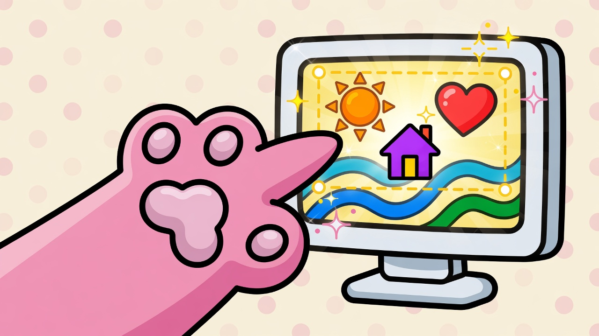
先用爪子点网页
点到的东西，才是这次任务的积木。
2 · 积木
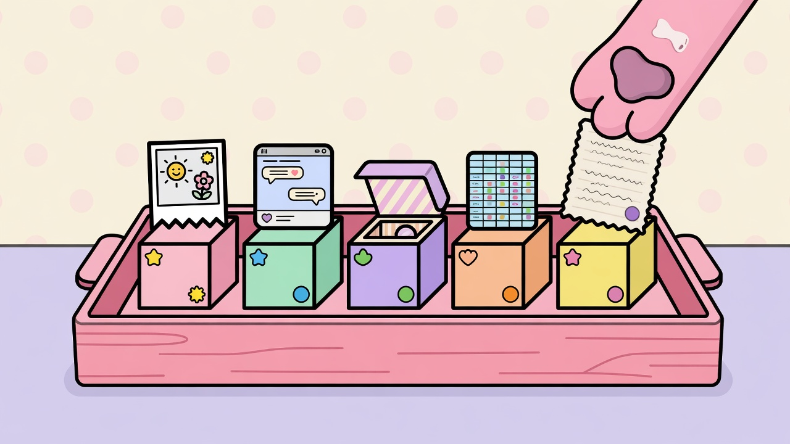
选中变成托盘上的积木
图片、截图、容器、表格、文字。先收着，先不猜意思。
3 · 说结果
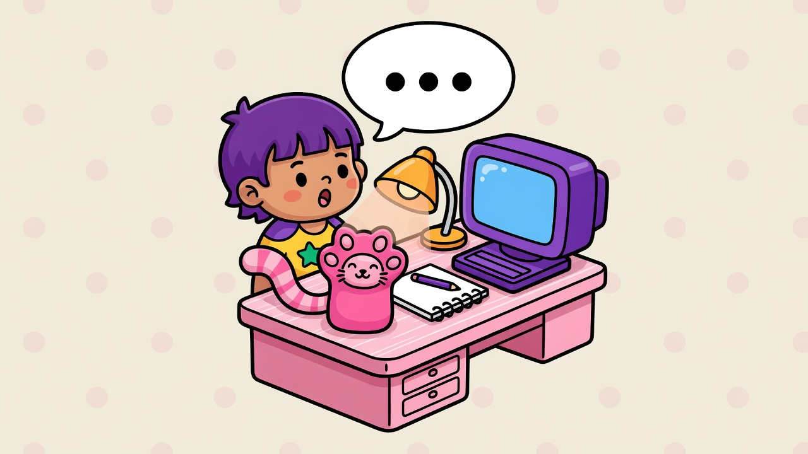
在旁边的小书桌说想要什么
不选编辑器。只说结果：海报、表、网站、还是回答。
4 · 送信
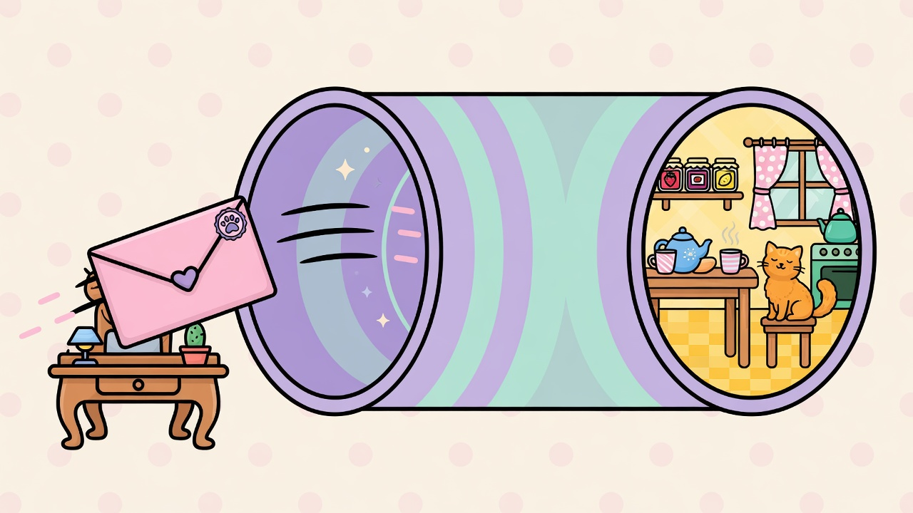
纸条钻过隧道
侧栏 → 后台管道 → 后厨。每一句话都走同一条路。
5 · 房子
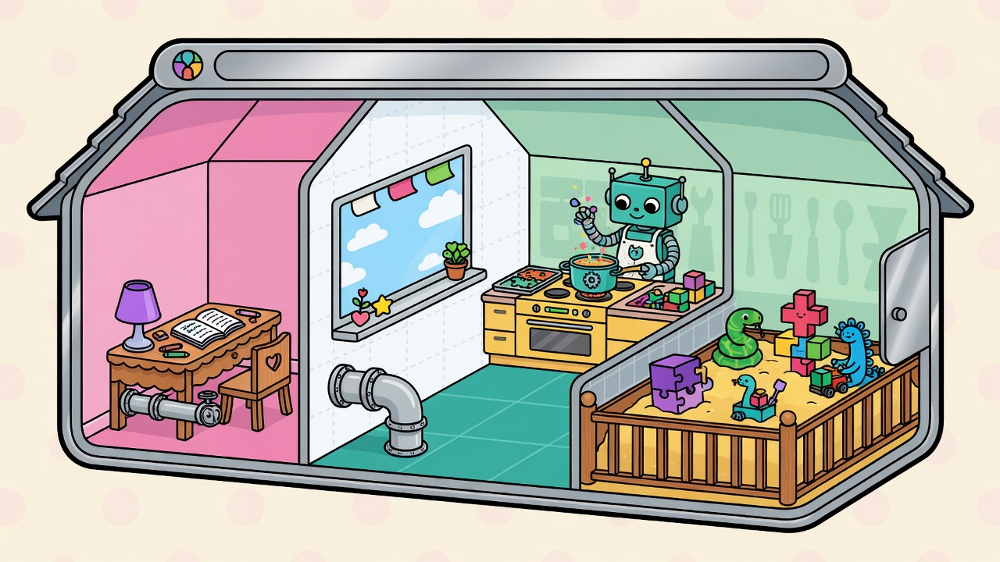
房子里有四间房
书桌、网页、后厨、沙盒围栏。机器人在后厨，不能乱跑。
6 · 看世界
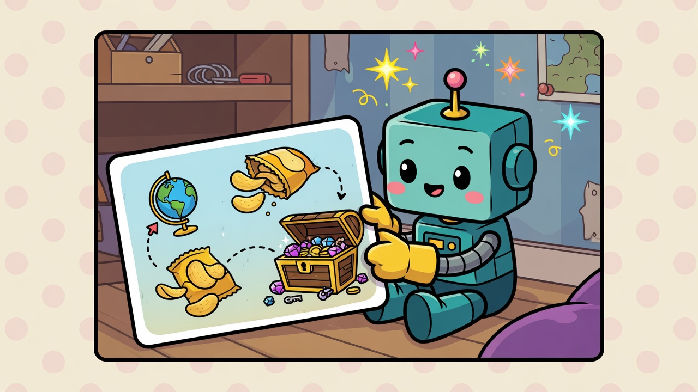
后厨先看世界卡片
积木、宝物、打开的房间。再决定：说话、看一看、捞过来、还是动手做。
7 · 三件玩具
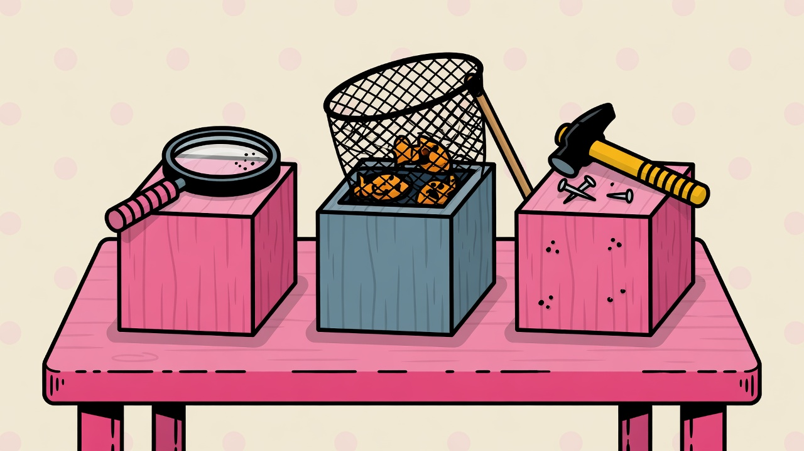
桌上永远只有三件玩具
看一看 · 捞过来 · 动手做。有玩具不代表一定要用。
8 · 食谱
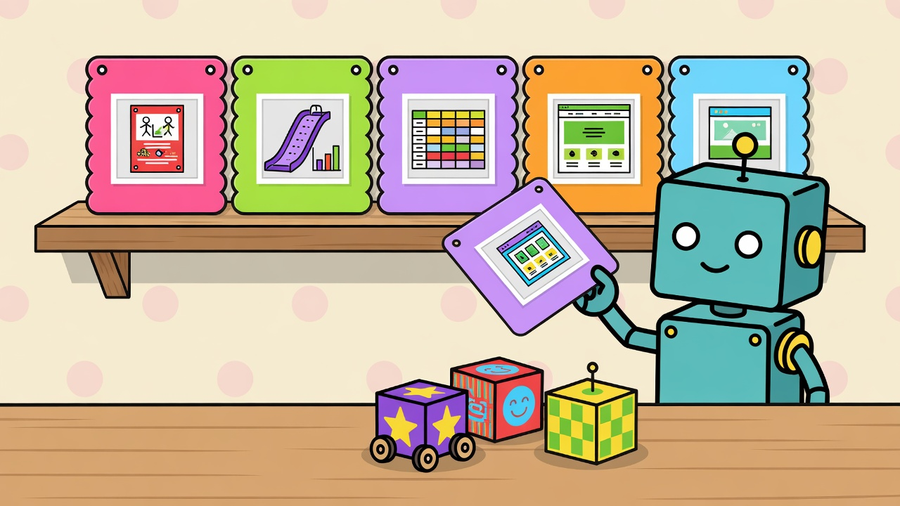
墙上的食谱卡可以拿下来看
食谱不是新玩具。适合就看一眼，不适合就放回去。
9 · 两只箱子
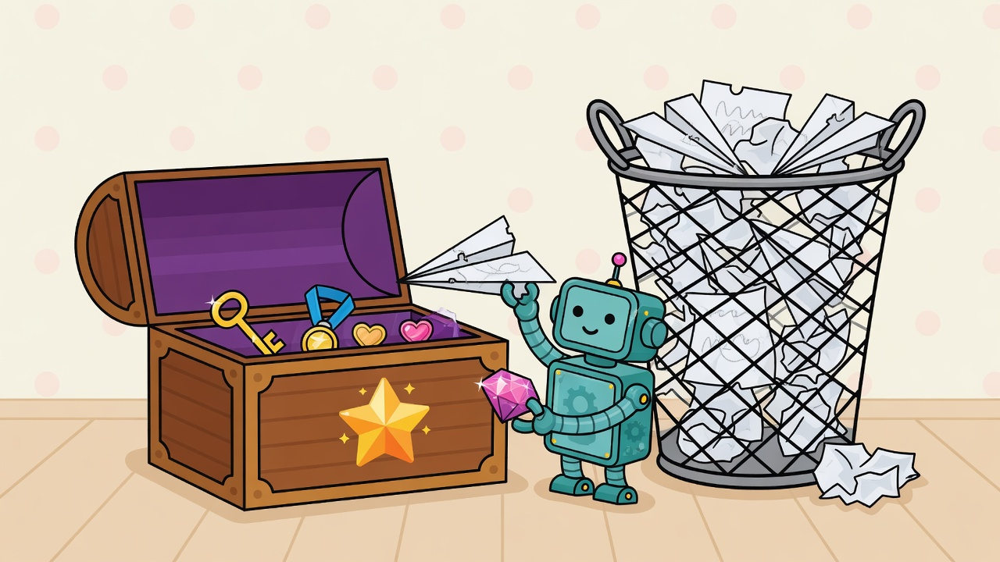
宝贝进箱子，草稿纸会扔掉
箱子是交付物。草稿纸做完就走。机器人不能改你的积木托盘。
10 · 四扇门
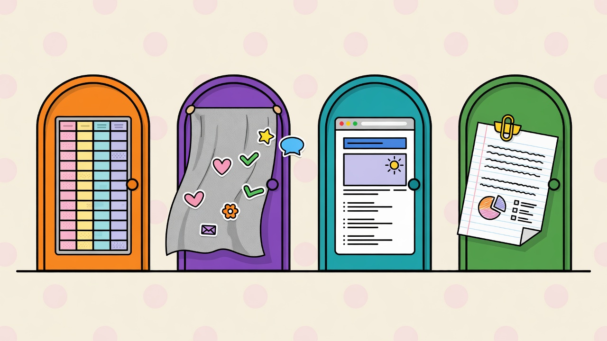
做好的东西打开对应的门
格子表 · 无限画布 · 真网页 · 纸。文件类型开门，人不用挑房间。
11 · 专用笔
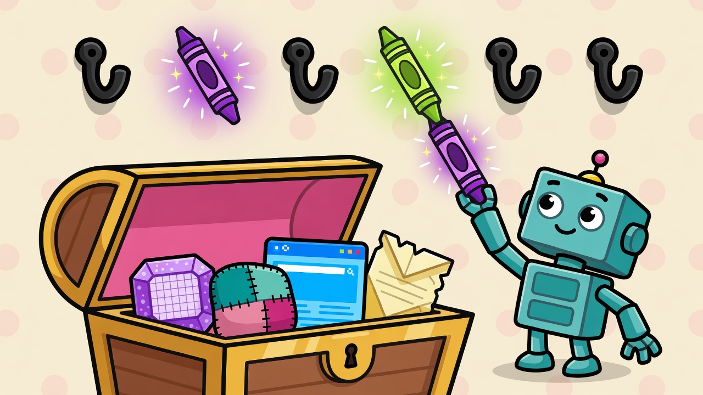
箱子里有对应宝物，才给专用笔
有表才给表笔。有画布才给画笔。切到别的网页，笔还在。
12 · 表
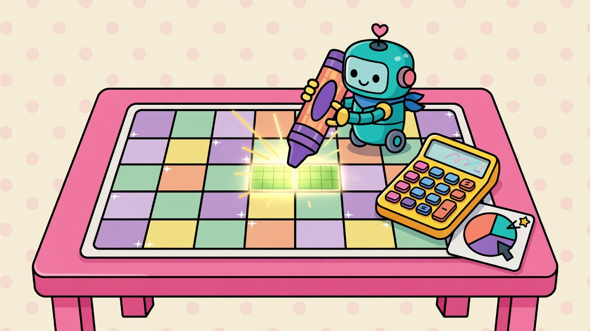
表是会算数的活格子
点格子再说。专用笔改这一格，改完回读给你看。
13 · 画布
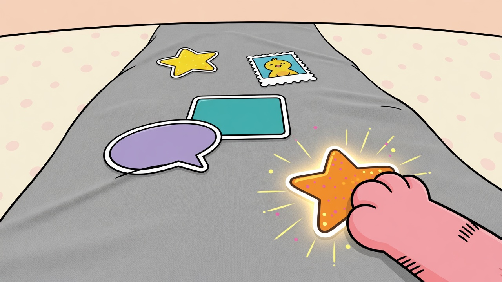
海报和幻灯片住在无限灰布上
点一张贴纸，再说改它。没有点中，机器人先问，不瞎猜。
14 · 网页
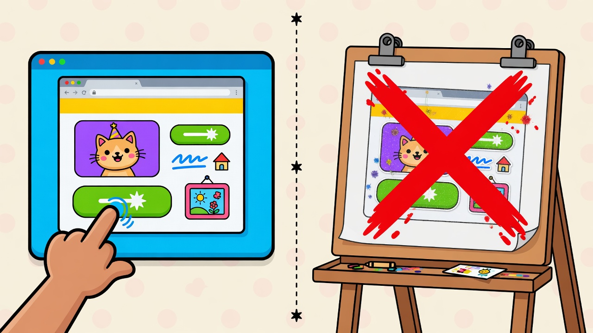
真网站是一页能点的网页
不是画板。写好 HTML，打开它。画布是给海报用的。
15 · 沙盒
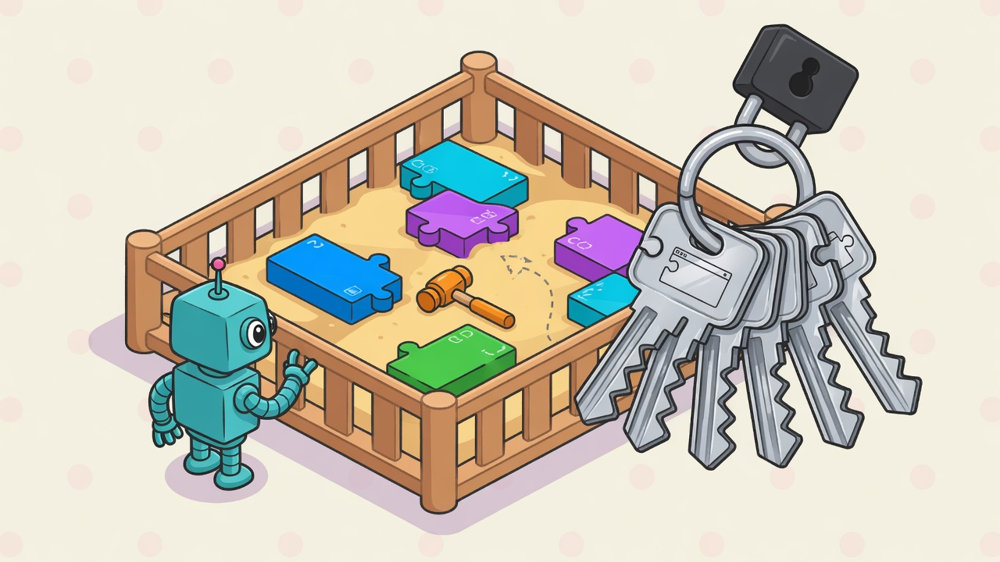
写出来的代码关在围栏里
锤子可以在围栏里敲。房子钥匙拿不到。不能去摸真网页。
16 · 分工
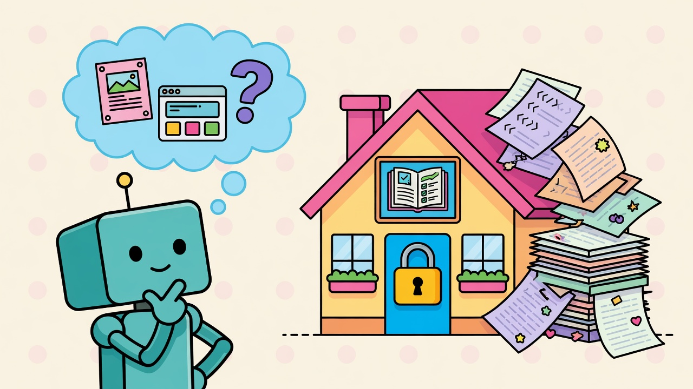
机器人负责想，房子负责上锁
想：这是海报还是网站。锁：乱写的漂亮 HTML 进不了画布。
17 · 错门
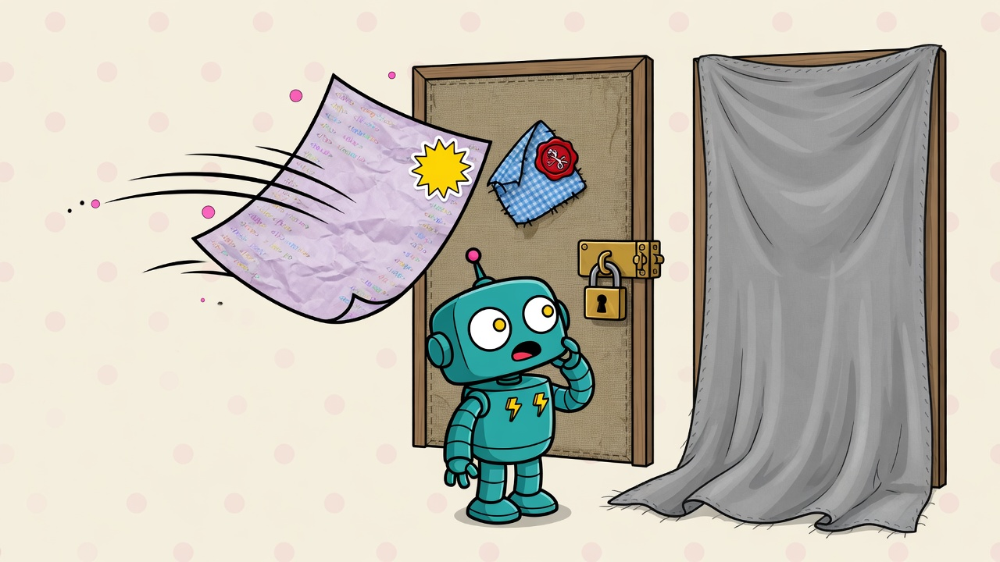
漂亮海报纸会从画布门弹回来
海报要变成布上的贴纸。网页才用 HTML 纸。
18 · 先点再改
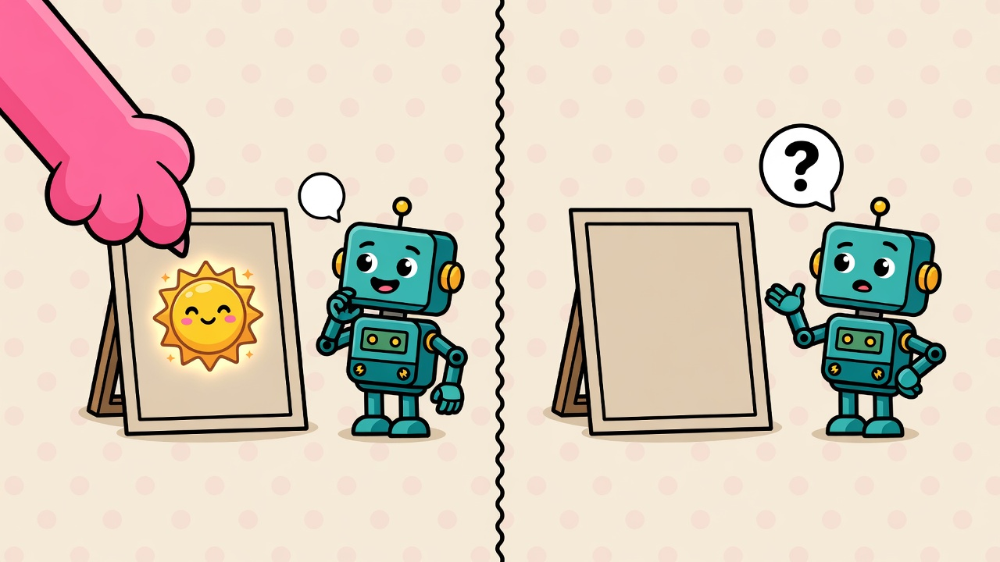
先点中，再改
点中了就改那一张。空着手，先举手问。不问完不乱改。